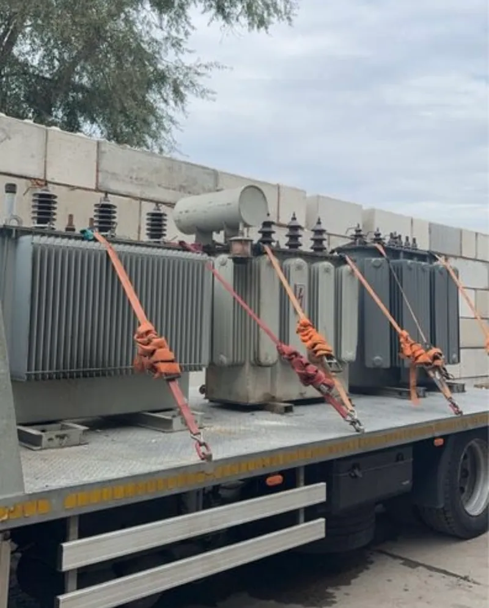

Urząd skarbowy w Rzeszowie
Odbiór dwóch transformatorów z Urzędu Skarbowego w Rzeszowie, o łącznej wadze 5 ton. Z uwagi na małą przestrzeń załadunku musieliśmy wykorzystać samochód ciężarowy z HDS.
Skontaktuj się!Sprawdź nasze przykładowe odbiory z Rzeszowa oraz skontaktuj się z nami w celu ustalenia odbioru.
Odbiór dwóch transformatorów z Urzędu Skarbowego w Rzeszowie, o łącznej wadze 5 ton. Z uwagi na małą przestrzeń załadunku musieliśmy wykorzystać samochód ciężarowy z HDS.
Skontaktuj się!
Odbiór trzech transformatorów z firmy TYWENT z Tyczyna, o łącznej wadze 9 ton. Do wskazania ciężaru użyliśmy specjalistycznej wagi dźwigowej.
Skontaktuj się!Odbiór jednego transformatora ze stadniny koni w Kielnarowej, o łącznej wadze 0,4 tony. Podejmujemy się również najmniejszych zleceń, przy których także zachowujemy dobre stawki, jak i szybki odbiór.
Skontaktuj się!